ԲՆՈՒԹԱԳԻՐ
ՏՎՅԱԼՆԵՐ
Ուղղություն
Հյուսիսից
Հյուսիս-արևելքից
Հյուսիս-արևելքից
Հյուսիս-արևելքից
Հարավից
Հարավ-արևմուտքից
Սահմանակից մարզեր
Լոռի
Տավուշ
Գեղարքունիք
Արագածոտն
Արարատ
Երևան
Հարևան երկրներ
-
-
-
-
-
-
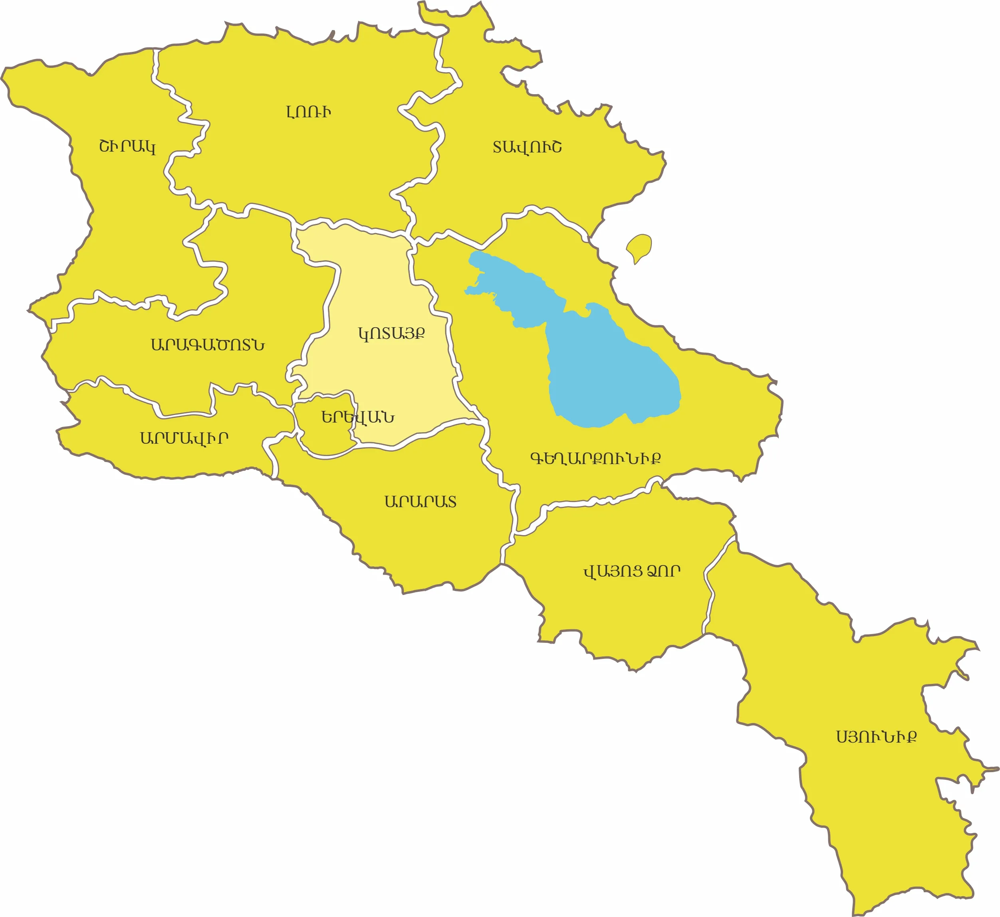
Հիմնադրումը
ՀՀ Կոտայքի մարզը ստեղծվել է 1995 թվականի ապրիլի 12-ին։
Տարածքը
ՀՀ Կոտայքի մարզը կենտրոնական դիրք է գրավում Հայաստանի տարածքում, զբաղեցնելով երկրի ամողջ տարածքի 7, 0 %-ը: Հանրապետության միակ մարզն է, որը որևէ հարևան պետության հետ չունի միջպետական սահման:
Վարչական կենտրոնը
Հրազդան քաղաք (Ներքին Ախտա)։: Գտնվում է Երևանից 40 կմ հյուսիս-արևելք։ Բնակեցված է եղել վաղ երկաթի ժամանակաշրջանով (Ք. ա. 1 հազ,)։ Հիմնադրվել է որպես քաղաք 1959 թ,-ին, մարզկենտրոն է 1995 թվականից :
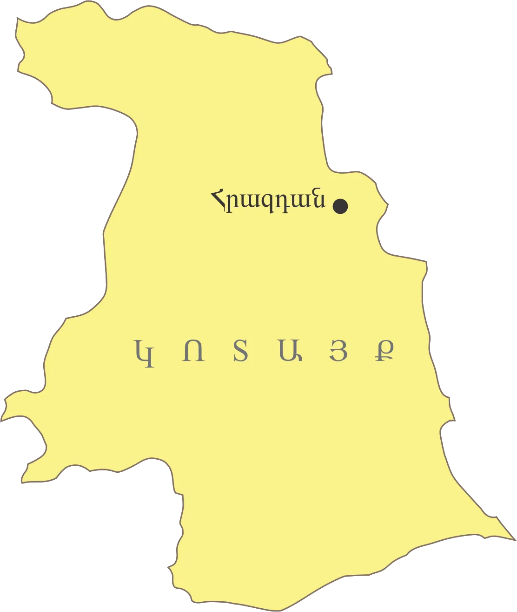
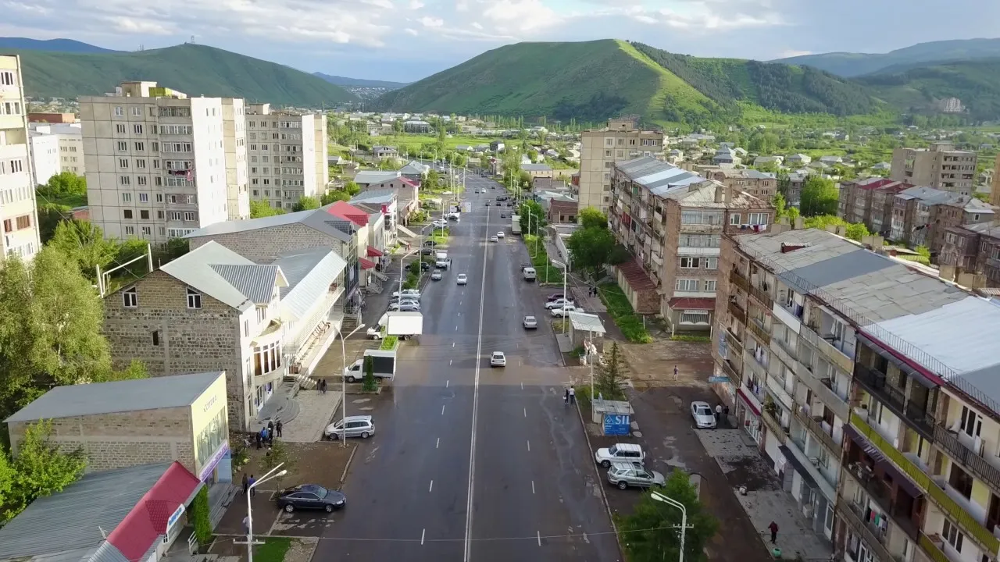
Ցուցիչ
Տարածք
Կոորդինատներ
Բարձրություն
Ամենաբարձր գագաթ
Վարչական կենտրոն
Տարածաշրջաններ
Քաղաքներ
Գյուղեր
Բնակչություն
Հեռավորություն Երևանից
Փոստային կոդ
Թեժ գիծ
Վեբ կայք
Տվյալ
2,086 քառ. կմ (7,0 %)
40°25′ հս. լ., 44°45′ ավ. ե.
900 – 2,500 մ
Թեղենիս (2,851 մ)
Հրազդան
Հրազդան, Կոտայք, Նաիրի
Հրազդան, Աբովյան, Եղվարդ, Բյուրեղավան, Չարենցավան, Ծաղկաձոր, Նոր Հաճն
67
316,734 (2016 թ.)
43 կմ
2201 – 2506
(+374 223) 2-57-14, (+374 223) 2-67-85
kotayk.mtad.am
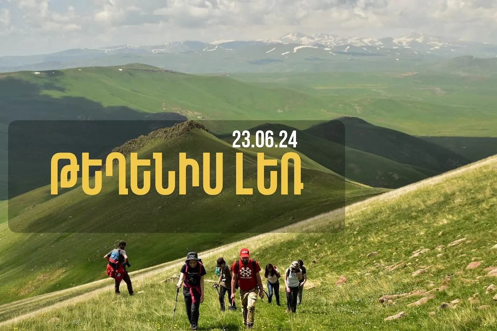
Ամենաբարձր գագաթ Թեղենիս (2,851 մ)
Մարզային հեռախոսային կոդեր
Բնակավայր
Հրազդան
Չարենցավան
Աբովյան
Արզնի
Առինջ
Նաիրի (CDMA)
Նոր Հաճն
Կոդ
223
226
222
222
222
224
224
Մարզպետարան/Կապ
Հասցե․ ք. Հրազդան, Կենտրոն թաղամաս, վարչական շենք
Վեբ կայք kotayk.mtad.am
Էլ․ հասցե․ kotayk@mta.gov.am
Հեռ./ֆաքս (+374 223) 2-36-63 (+374 223) 2-73-37
-
-
-
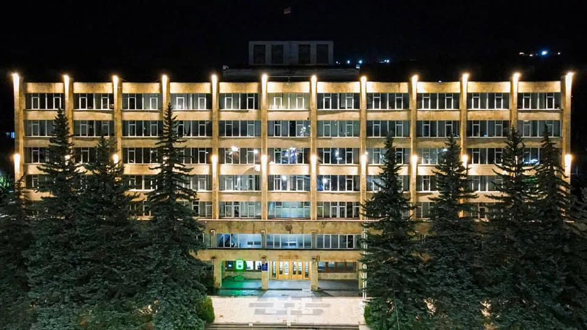
ԻՆՉՊԵՍ ՀԱՍՆԵԼ
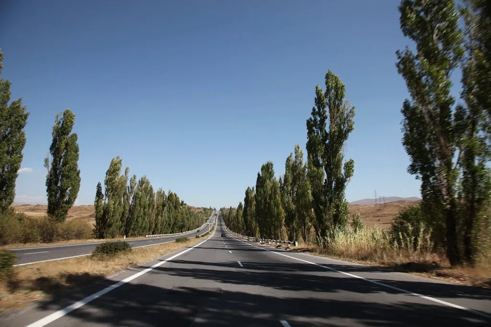
Ավտոմայրուղիներ
Մարզով անցնում է Մ4 Երևան–Հրազդան-Սևան մայրուղին, որը կապում է մարզը երկրի մյուս հատվածների հետ։
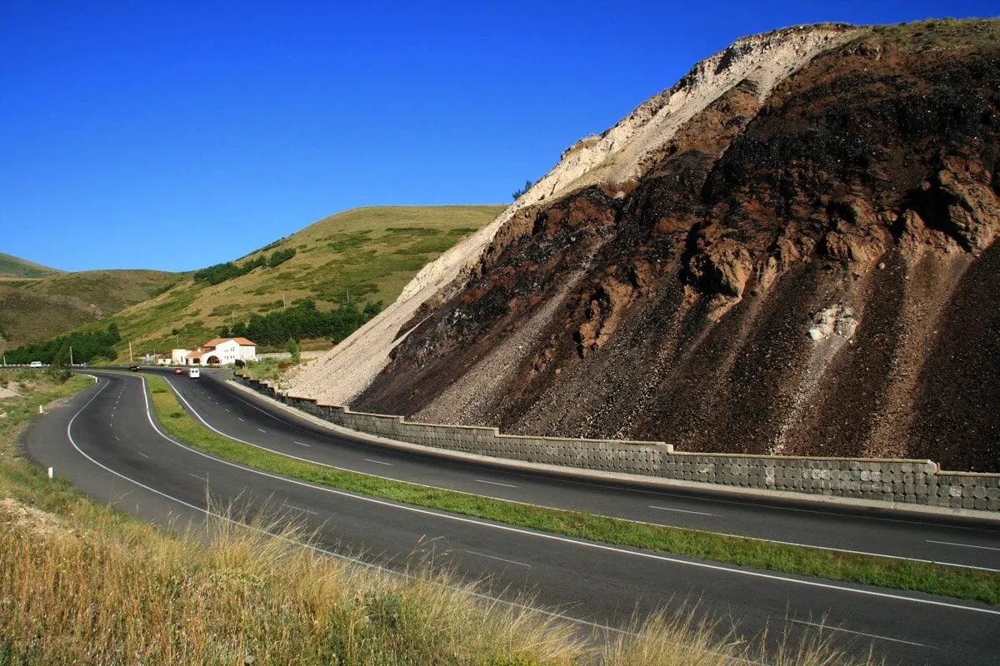
Երթուղային տաքսի և ավտոբուս
- Երևանից դեպի Հրազդան ուղևորությունը տևում է մոտ 40–50 րոպե
- Մեքենաները շարժվում են Երևանի Կենտրոնական երկաթուղային կայարանից և Հյուսիսային ավտոկայանից
-
Տոմսի արժեքը․
- Երևան–Հրազդան ավտոբուս՝ 300 դրամ
- Երևան–Հրազդան երթուղային տաքսի՝ 500 դրամ
Մինի-ավտոբուսներ և երթուղայիններ
- Ամբողջ օրվա ընթացքում կան կանոնավոր երթուղիներ Հրազդան–Երևան և հակառակ ուղղությամբ։
- Երթուղայինները մեկնարկում են Երևանի Ազատության պողոտայից, արժեքը՝ 300 դրամ, տաքսին՝ 500 դրամ։
- «Մուլտի տրանսպորտ» ՍՊԸ-ի 15 մեքենա իրականացնում են Հրազդան–Երևան կանոնավոր ուղևորություններ, հետադարձը ժամը 21:00-ին, ուղեվարձը՝ 700 դրամ։
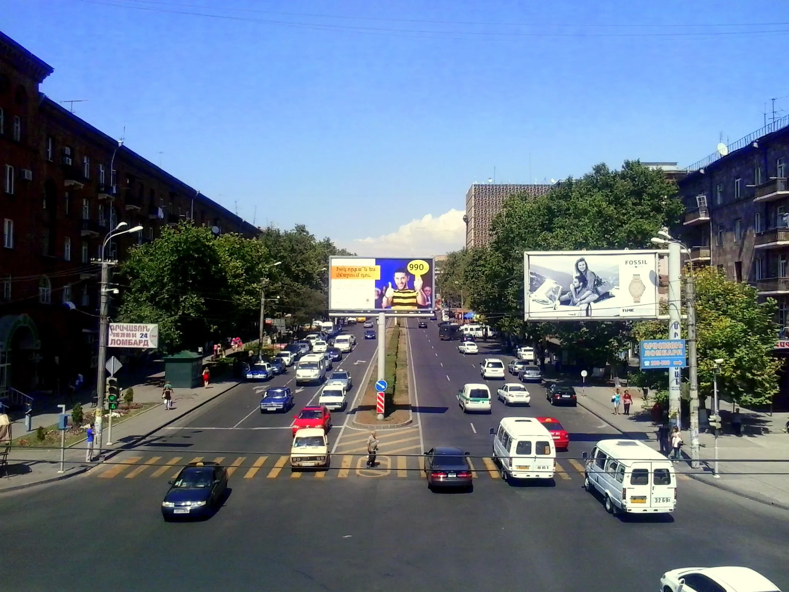
Միկրոավտոբուսներ («Mercedes Sprinter»)
- Գործում են ուղևորափոխադրումներ դեպի Երևան։
- Կոնտակտ՝ 094 51 41 03
Երկաթուղի
- Մարզով անցնում է Երևան-Հրազդան-Իջևան երկաթգիծը՝ Երևան-Սևան-Շորժա և Հրազդան-Իջևան երկաթուղիներով:
- Երևանից Հրազդան ուղևորությունը տևում է մոտ 50 րոպե։
- Էլեկտրագնացքը Երևանից մեկնում է ամեն օր՝ 07:00, Հրազդանից՝ 18:00։
-
Տոմսի արժեքը․
- մինչև Հրազդան՝ 350 դրամ Հրազդան–Շորժա սեզոնային
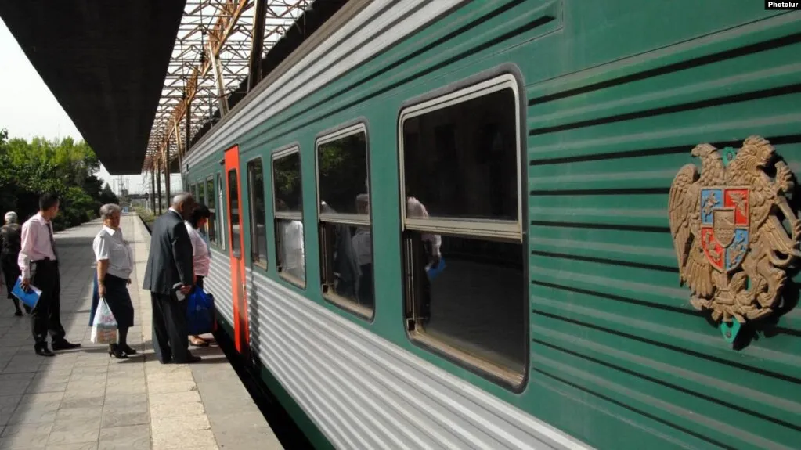
էլեկտրագնացք
- Ուրբաթ, շաբաթ և կիրակի օրերին մեկնում է 06:45-ին Հրազդան կայարանից, Երևան «Ալմաստ» կառամատույց է ժամանում 08:10-ին, Ալմաստից դեպի Սևանա լիճ՝ 08:30-ին, Շորժայի կայարան հասնում է 11:28-ին:
- Հակառակ ուղղությամբ մեկնում է 17:00-ին՝ Երևան ժամանում 20:00-ին, Հրազդան՝ 21:42-ին

ԿԼԻՄԱ
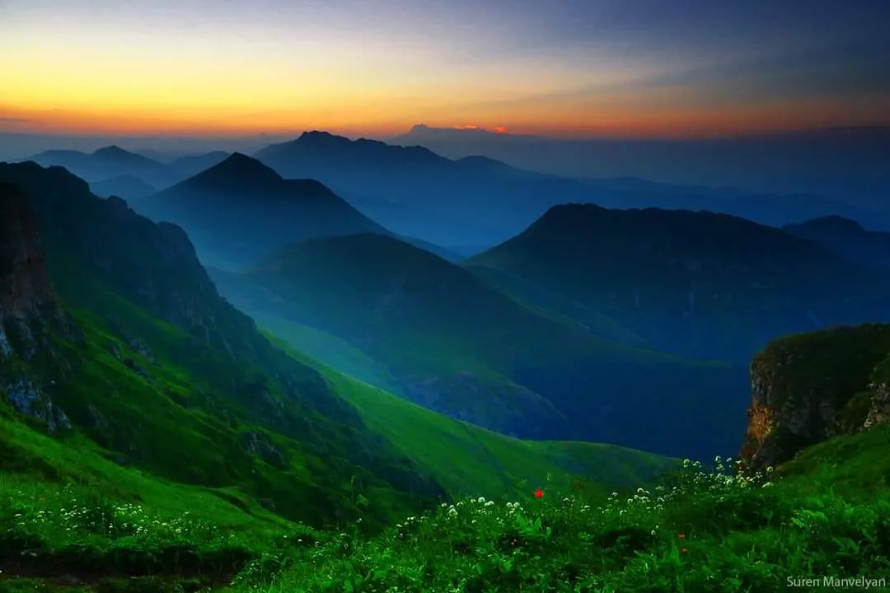
Կոտայքի մարզը ֆիզիկա-աշխարհագրական առումով գտնվում է Արարատյան գոգավորությունում: Տարածքը կարելի է բաժանել երեք ենթաշրջանների. Գեղամա լեռնավահանի արևմտյան լանջեր, Կոտայք-Եղվարդի սարավանդներ և Մարմարիկի հովիտ:
Կլիմայի առանձնահատկություններ
- Կոտայքի մարզում կլիմայական պայմանները փոփոխվում են ըստ բարձրության՝ չոր և տաք ցամաքայինից մինչև ձնամերձ։
- Գեղամա լեռնաշղթայի կատարային գոտում ձմեռը խիստ է, երկարատև (240-250 օր), կայուն ձնածածկույթով:
- Կոտայքի սարավանդի կլիման չափավոր տաք է, կիսաչորային:
- Կոտայքի մարզում շատ լավ արտահայտած է լեռնահովտային շրջանառությունը:
- Մարմարիկի հովտում կլիման բարեխառն է և խոնավ:
- Եղվարդի սարավանդի կլիման բարեխառն է` համեմատաբար տաք ամառով և չափավոր ցուրտ ձմեռով: Ձմռան տևողությունը 80-90 օր է: Հունվարի
Եղանակների բնութագիր
Ձմեռ - ցուրտ են, բայց ոչ խիստ: Ձմռան տևողությունը 80-90 օր է: Ձմռանը միջին գոտում՝ մինչև 2000 մ բարձրության վրա, եղանակը ավելի տաք և արևոտ է, քան Արարատյան գոգավորությունում։
Գարուն – կարճատև ու անցողիկ է: Մայիսի կեսերից սկսած ջերմաստիճանը անցնում է +15 °C,
Ամառ - չոր, հաճախ խորշակներով ամառը տևում է մինչև սեպտեմբերի 2-րդ կեսը։
Աշուն – մեղմ է, անհողմ, հաճախ՝ թույլ անձրևներով։
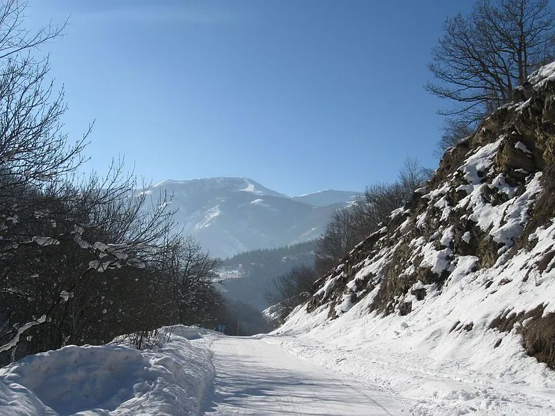
Ջերմաստիճան
- Օդի միջին տարեկան ջերմաստիճանը տատանվում է +10 °C-ից - 2.5 °C:
- Հունվարի միջին ջերմաստիճանը ցածրադիր վայրերում կազմում է՝
- 4.5-ից -6 °C( Եղվարդում, Ֆանտանում), բարձրադիր վայրերում՝- 3.6 °C
- Անսառնամանիք օրերի թիվը ստորին գոտում կազմում է մոտ 200 օր։
- Հուլիս-օգոստոսի միջին ջերմաստիճանը՝ +17°C -ից+26 °C/։
-
Ցածրադիր վայրերում գրանցված են Հայկական լեռնաշխարհի բացարձակ
առավելագույն և նվազագույն ջերմաստիճանները․
- Ամենացածր՝ -35 °C
- Ամենաբարձր՝ +42 °C (Արարատյան հարթավայրի հարավ-արևելք)
Տեղումներ
- Տեղումների միջին տարեկան քանակը 500-700մմ է:
- Տարեկան մթնոլորտային տեղումների քանակը՝ 200 մմ (ցածրադիր) – 1000 մմ (բարձրադիր), մնացած հատվածներում՝ 250–700 մմ։
Քամիներ
- Հարթավայրերին բնորոշ են լեռնահովտային քամիները։
- Ամռանը, կեսօրից հետո, Գեղամա լեռներից փչող քամիները մեղմացնում են հովիտների տապը։
- Քամու միջին տարեկան արագությունը կազմում է 1–2 մ/վ, առավելագույնը՝ 18–22 մ/վ, լեռնային շրջաններում՝ մինչև 35 մ/վ, պոռթկումը՝ 40 մ/վ։
Մթնոլորտային երևույթներ
- Մառախուղների տևողությունը տարվա մեջ միջինում կազմում է 60-150 ժամ:
- Տարվա տաք ժամանակաշրջանում դիտվում են ամպրոպներ:
- Ամպրոպով օրերի թիվը կազմում է միջինում 36-46 օր, առանձին տարիների այն կարող է հասնել 70-80 օրվա:
Արևափայլ
- Մարզը բնութագրվում է չափազանց առատ արևափայլով՝ միջին տարեկան տևողությունը հասնում է 2471–2968 ժամ / տարի։
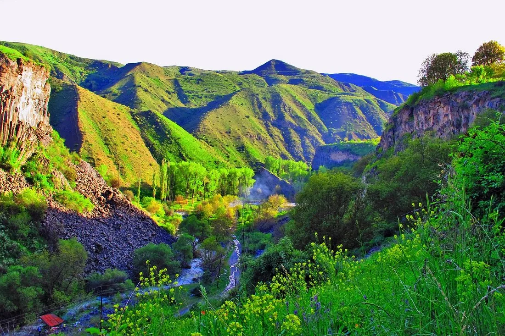